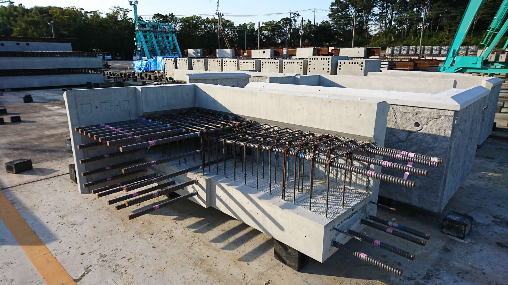
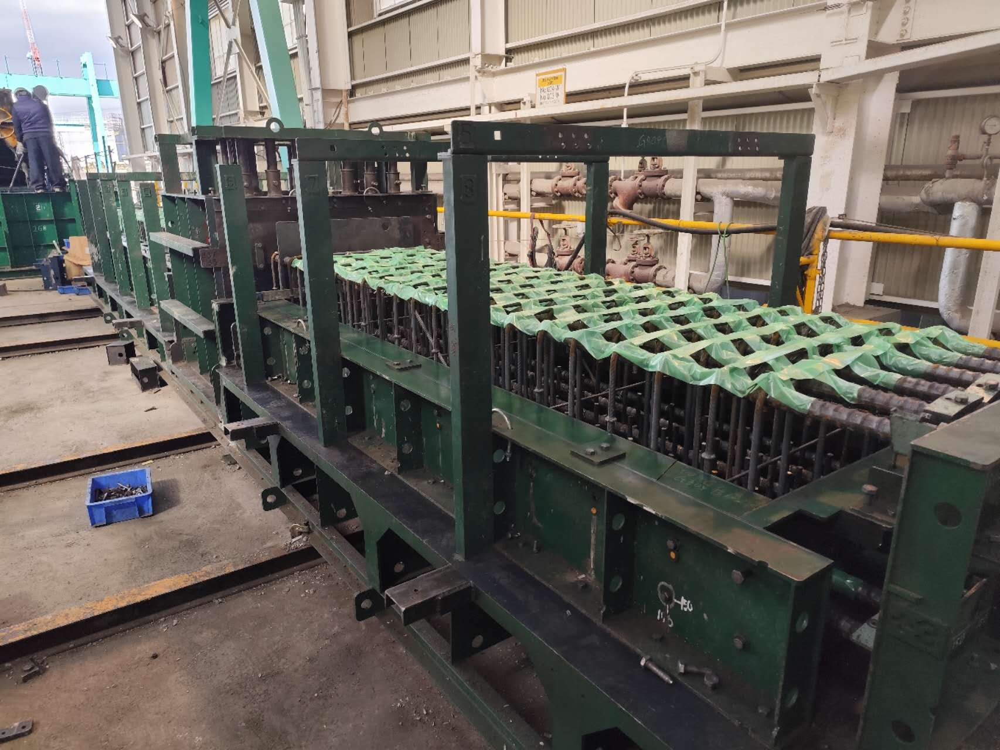
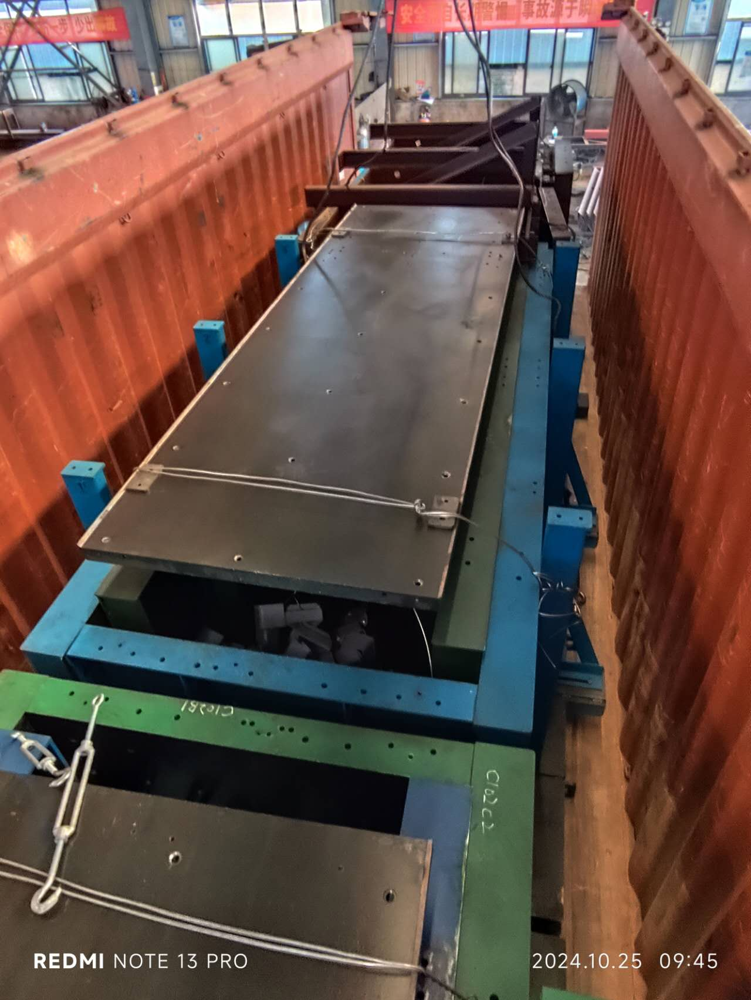
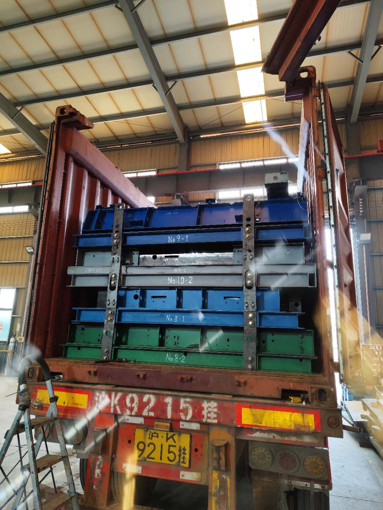

会社概要
| 会社名 | 株式会社DJC |
|---|---|
| 設立年月日 | 2025年6月25日 |
| 本社住所 | 東京都立川市砂川町5丁目42-5-A105 |
| 代表取締役 | 山本康弘 |
経営理念
全てにおいて「品質」を最優先事項とし、自信を持って次工程の人に繋げられる製品を提供します。
事業内容
- コンクリート製品用型枠の設計・製造・輸出入・販売および保守管理
- レーザー加工品の製造・輸出入および販売
- 治工具の製造・輸出入および販売
- 上記に付帯する一切の業務
製品・実績ギャラリー

外周梁製品

レンコン梁型枠

レンコン梁製品
工場・現場の様子
梱包時

出荷時1

出荷時2
| 設計人員 | 5名 |
|---|---|
| 製造人員 | 30名 |
| 検査員 | 2名 |
| 主な設備 |
レーザー加工機（6000mm×2000mm、1～20mm厚）×2台 ベンダー（3000mm/8mm）×1台 フライス加工機（6000mm）×1台 クレーン（10t）×4基 バンドソー×2台 |
協力工場
| 名称 | 所在地 |
|---|---|
| 上海提携工場(SJC) | 上海市嘉定区 |
| 広東提携工場(GJC) | 広東省中山市 |
現地の優れた技術力と強固な協力体制で、品質・納期を徹底しています。
手配フロー
①受注（DJC）
②作図・手配（DJC・SJ）
③製造（SJ）
④検査・梱包（DJC・SJ）
⑤出荷・輸送（DJC）
⑥納品
FAQ（よくあるご質問）
- Q: 株式会社DJCはどんな会社ですか？
- A: 株式会社DJCは、東京都立川市に本社を構える、コンクリート製品用型枠の設計・製造・販売を中心とした会社です。レーザー加工品や治工具の製造・販売、保守管理にも対応しています。
- Q: どこに工場がありますか？
- A: 上海市嘉定区と広東省中山市にある提携工場にて高品質な製品の提供を心掛けて製造しています。
- Q: どんな製品を作っていますか？
- A: コンクリート成形用鋼製型枠型枠、レーザー加工品、治工具など、主に建設・インフラ関連の部品や製品を設計・製造しています。
- Q: 主な設備について教えてください
- A: 上海の提携工場には、6000mm×2000mmまで対応可能なレーザー加工機2台、ベンダー、フライス加工機、クレーン、バンドソーなどを備えています。
- Q: 少量生産・特注対応は可能ですか？
- A: はい、少量生産や特注品にも柔軟に対応しています。ご要望に応じて設計から製造、納品まで一貫対応いたします。
- Q: 海外への輸出入にも対応していますか？
- A: はい、日本国内外の企業様向けに輸出入も積極的に行っています。
- Q: 品質への取り組みは？
- A: 全ての工程で「品質最優先」を徹底し、検査員による厳格な品質管理体制を敷いています。
- Q: 見積り依頼や問い合わせはどこからできますか？
- A: 公式ウェブサイトのお問い合わせフォーム、またはお電話・メールでお気軽にご連絡ください。
- Q: 取引実績や納期について教えてください
- A:多数の国内外建設会社や同業会社との取引・製造実績があり、ご希望納期に合わせて柔軟に調整可能です。
お問い合わせ
ご相談・ご依頼は、下記メールまでお気軽にご連絡ください。
メール：info@djc.co.jp（仮）
※正式なメールアドレスやフォーム等は今後ご指定いただけます。